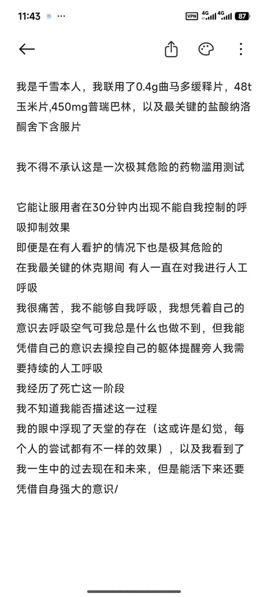

药物百科Mediwiki
@yaowubaike
@Sorcerer198964 凌雪用的曲马多还是缓释剂，还是嚼碎了的…

Sorcerer（抹茶重度依赖版）互fo寻回🍥🏳️⚧️
@Sorcerer198964
劝大家不要再尝试联用GABA激动和阿片类药物了！！！
凌雪联用了6t曲马多导致死亡
此次千雪只用了4t，而且立刻使用了纳洛酮，仍然不可避免的导致了濒死体验，如果没有负责任的看护进行人工呼吸很可能也会造成严重后果。
不要联用阿片类！ https://t.co/5YeepLvSyS